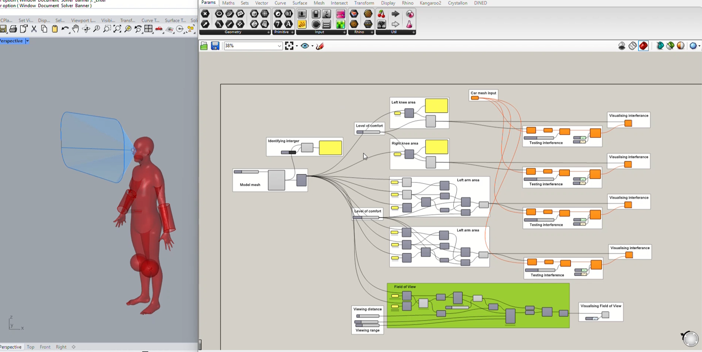
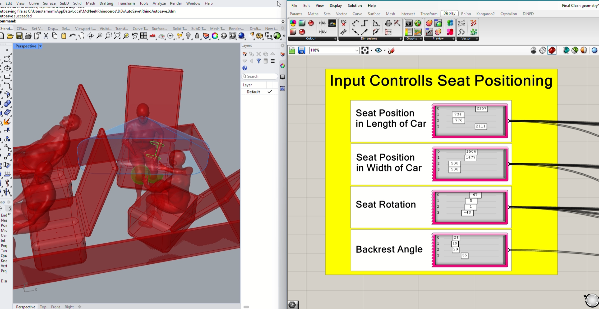
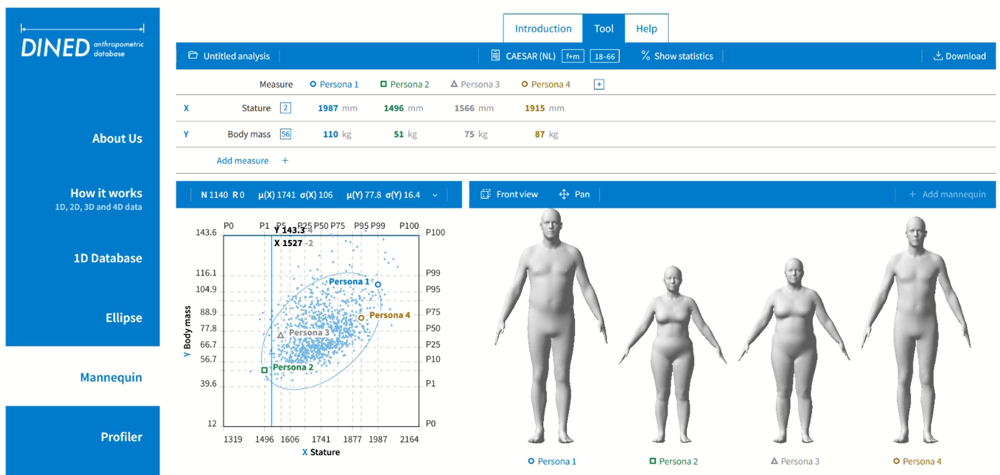
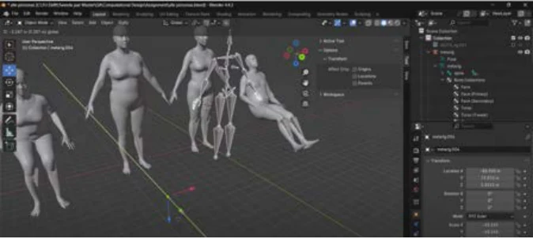
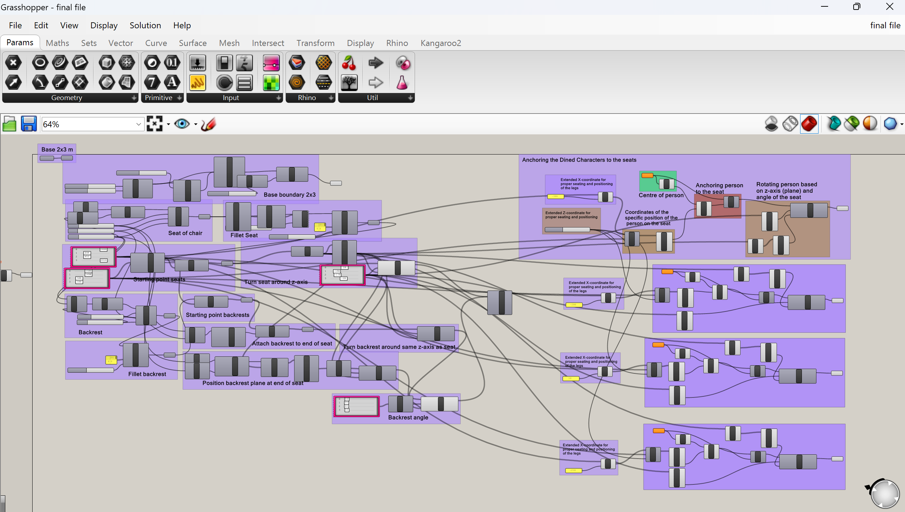

04 / Computational design
Vehicle Interior Model
A parametric ergonomics model that evaluates how seat arrangements accommodate different bodies and postures in an autonomous vehicle cabin.

Beyond the average occupant
When driving becomes automated, the cabin can support working, relaxing and socialising. Our team treated physical ergonomics as the starting point for layout design, considering occupant diversity and people with reduced mobility rather than relying on a single average mannequin.

A parametric evaluation loop
The Grasshopper definition uses a 2 × 3 metre platform with adjustable seat positions, rotations and backrest angles. Occupants move relative to their seats; comfort geometry is generated around each body and checked for interference with the cabin and other occupants. These checks feed back into a comfort score.

Grounded in body data
Body meshes sourced from TU Delft’s DINED anthropometric database were rigged and posed in Blender. Linking their positions to seat geometry allows a configuration change to propagate through the model automatically. The result is a computational evaluation workflow for comparing interior layouts. The opening cabin image is a contextual reference reproduced from the portfolio; the model development is shown below.


